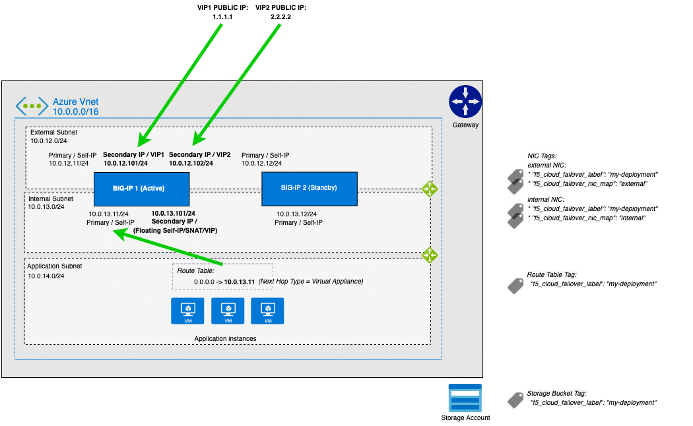
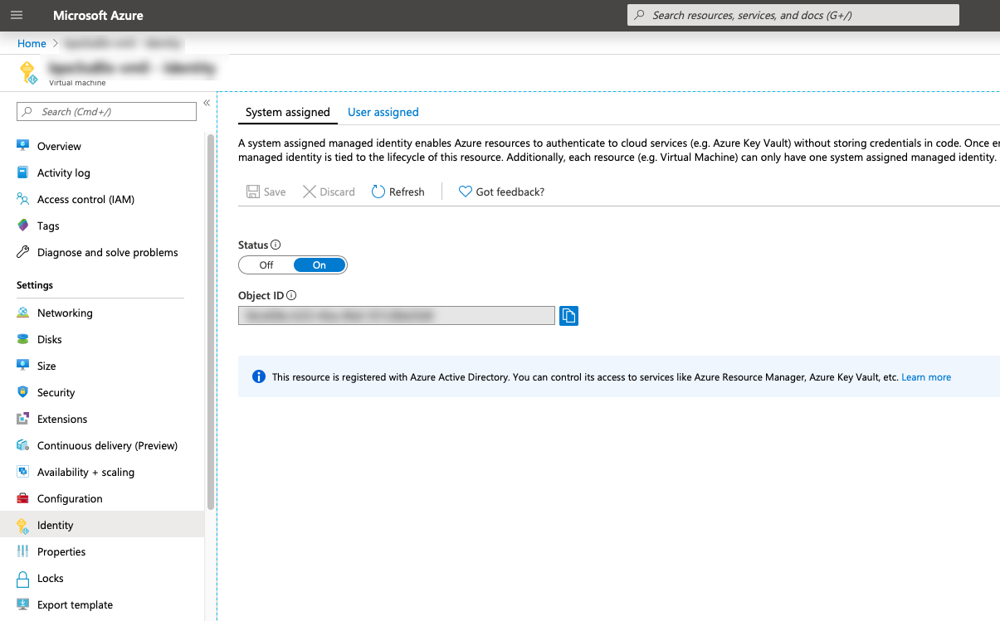
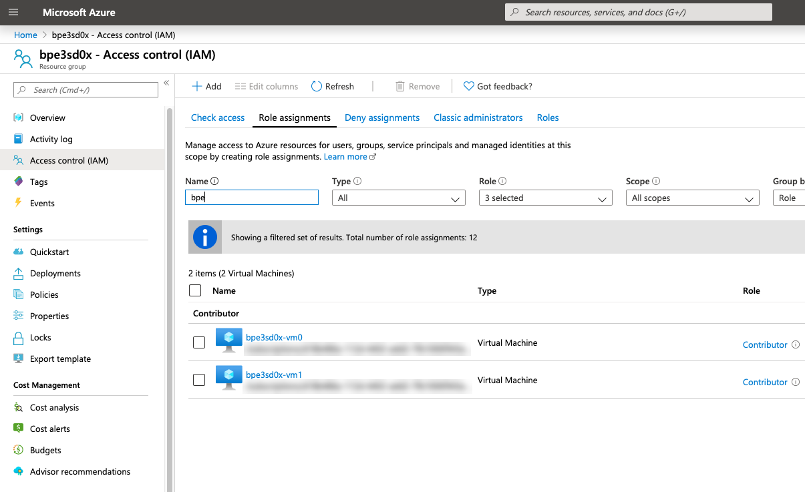
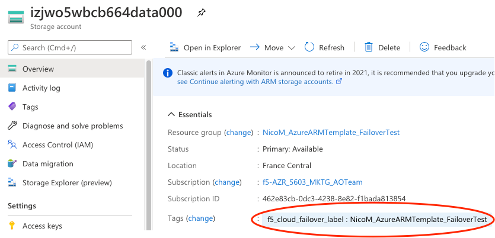
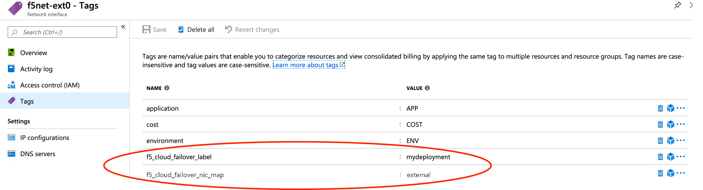
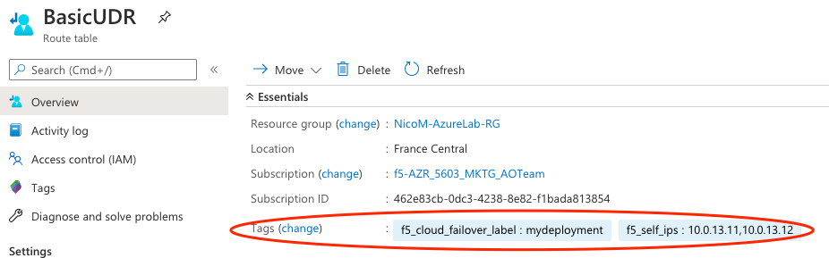

Azure¶
In this section, you will see the complete steps for implementing Cloud Failover Extension in Microsoft Azure. You can also go straight to the Example Azure Declaration.
Azure CFE Prerequisites¶
These are the basic prerequisites for setting up CFE in Microsoft Azure.
2 BIG-IP systems in Active/Standby configuration. You can find an example ARM template here . Any configuration tool can be used to provision the resources.
Virtual addresses created in a floating traffic group and matching addresses (secondary) on the IP configurations of the instance NICs serving application traffic.
Tip
Use Static allocation for each IP configuration that will serve application traffic. Using Dynamic allocation is discouraged for production deployments.
Access to Azure’s Instance Metadata Service, which is a REST Endpoint accessible to all IaaS VMs created with the Azure Resource Manager. The endpoint is available at a well-known non-routable IP address (169.254.169.254) that can only be accessed from within the VM. See the instructions below to Set up access to Azure’s Instance Metadata Service.
Enable “enableIPForwarding” on the NICs if enabling routing or avoiding SNAT. See Enable or disable IP forwarding for more information.
Note
CFE makes calls to the Azure APIs in order to failover cloud resource objects such as private IP addresses and route tables. These calls may vary significantly in response time. See the Performance and Sizing section for example times.
Complete these tasks to deploy Cloud Failover Extension in Microsoft Azure. Before getting started, we recommend you review the Known Issues and Frequently Asked Questions (FAQ). To see how to run CFE on Azure when BIG-IP instances have no route to public internet, see CFE in Isolated Environments.
| Step | Task |
|---|---|
| Create and assign a Managed Service Identity (MSI) | |
| Set up access to Azure’s Instance Metadata Service | |
| Modify and POST the Example Azure Declaration | |
| Update or Revert Cloud Failover Extension |
Azure Failover Event Diagram¶
The following diagram shows a failover event with CFE implemented in Microsoft Azure with an HA pair in an Active/Standby configuration.
In the diagram, the IP configuration has a secondary private address that matches a virtual address in a traffic group owned by the active BIG-IP. In the event of a failover, the IP configuration is deleted and recreated on that device’s network interface. Simultaneously, the user-defined routes are updated with a next hop attribute the corresponds to the self IP address of the active BIG-IP.

Note
Management NICs/Subnets are not shown in this diagram.
Example Azure Declaration¶
This example declaration shows the minimum information needed to update the cloud resources in Azure. See the Quickstart section for steps on how to post this declaration. See the Example Declarations section for more examples.
1 2 3 4 5 6 7 8 9 10 11 12 13 14 15 16 17 18 19 20 21 22 23 24 25 26 27 28 29 30 31 32 33 34 35 36 37 38 39 40 41 42 43 44 | {
"class": "Cloud_Failover",
"environment": "azure",
"controls": {
"class": "Controls",
"logLevel": "silly"
},
"externalStorage": {
"scopingName": "myCloudFailoverStorage"
},
"failoverAddresses": {
"enabled": true,
"addressGroupDefinitions": [
{
"type": "networkInterfaceAddress",
"scopingAddress": "10.0.12.101"
},
{
"type": "networkInterfaceAddress",
"scopingAddress": "10.0.12.102"
}
]
},
"failoverRoutes": {
"enabled": true,
"routeGroupDefinitions": [
{
"scopingName": "myroutetable-1",
"scopingAddressRanges": [
{
"range": "0.0.0.0/0"
}
],
"defaultNextHopAddresses": {
"discoveryType": "static",
"items": [
"10.0.13.11",
"10.0.13.12"
]
}
}
]
}
}
|
Create and assign a Managed Service Identity (MSI)¶
In order to successfully implement CFE in Azure, you need a system-assigned or user-managed identity with sufficient access. Your Managed Service Identity (MSI) should be limited to the resource groups that contain the BIG-IP instances, VNET, route tables, etc. that will be updated. Read more about managed identities here. To create and assign a Managed Service Identity (MSI) you must have a role of User Access Administrator or Contributor access. The following example shows a system-assigned MSI.
Important
CFE supports only one Managed Service Identity assigned to each Azure Virtual Machine instance; failover will NOT work correctly when multiple identities are assigned. You must create a single identity with all of the permissions required by CFE, as well as any other necessary permissions. You can create a managed identity manually or using the F5 access template. See Deploying Access Template for more information.
Enable MSI for each VM: go to Virtual Machine > Identity > System assigned and set the status to
On.For example:

Assign permissions to each MSI: go to Resource Group > Access control (IAM) > Role assignments > Add, make the changes listed below, and then add the MSI.
- Role: Contributor
- Assign access to: System assigned managed identity > Virtual Machine
For example:

Note
Certain resources may be deployed in a separate subscription. Add role assignments for each subscription where resources are located.
RBAC Role Definition¶
Below is an example Azure role definition with permissions required by CFE.
| Name | Scope | CFE Component | Description |
|---|---|---|---|
| Microsoft.Authorization/*/read | Roles and Role Assignments - Read | All | To authenticate using the managed identity. |
| Microsoft.Compute/locations/*/read | Locations - Read | All | To get the Azure location. |
| Microsoft.Compute/virtualMachines/*/read | Virtual Machines - Read | All | To get information about a BIG-IP instance. |
| Microsoft.Network/*/join/action | Network Provider - Join | All | To update network. |
| Microsoft.Network/networkInterfaces/read | Network Interfaces - Read | All | To get information about a network interface. |
| Microsoft.Network/networkInterfaces/write | Network Interfaces - Write | All | To update a network interface to use the active BIG-IP instance. |
| Microsoft.Network/publicIPAddresses/read | Public IP Addresses - Read | failoverAddresses | To get information about a public IP address. |
| Microsoft.Network/publicIPAddresses/write | Public IP Addresses - Write | failoverAddresses | To update a public IP address to use the active BIG-IP instance. |
| Microsoft.Network/routeTables/*/read | Route Tables - Read | failoverRoutes | To get information about a route table. |
| Microsoft.Network/routeTables/*/write | Route Tables - Write | failoverRoutes | To update route next hop to use the active BIG-IP instance. |
| Microsoft.Resources/subscriptions/resourceGroups/read | Resource Groups - Read | All | To get information about a resource group. |
| Microsoft.Storage/storageAccounts/read | Storage Accounts - Read | externalStorage | To get information about the storage account used for the failover state file. |
| Microsoft.Storage/storageAccounts/blobServices/containers/read | Storage Containers - Read | externalStorage | To get information about the storage container used for the failover state file. |
| Microsoft.Storage/storageAccounts/blobServices/containers/write | Storage Containers - Write | externalStorage | To create the storage container used for the failover state file. |
| Microsoft.Storage/storageAccounts/blobServices/containers/blobs/read | Storage Blobs - Read | externalStorage | To get information about the storage blob used for the failover state file. |
| Microsoft.Storage/storageAccounts/blobServices/containers/blobs/write | Storage Blobs - Write | externalStorage | To create the storage blob used for the failover state file. |
Important
- This example provides the minimum permissions required and serves as an illustration. You are responsible for following the provider’s IAM best practices.
- Certain resources such as the virtual network are commonly deployed in a separate resource group; ensure the correct scopes are applied to all applicable resource groups.
- Certain resources such as route tables may be deployed in a separate subscription, ensure the assignable scopes applies to all relevant subscriptions.
- CFE supports only one Managed Service Identity assigned to each Azure Virtual Machine instance; failover will not function when multiple identities are assigned. You must create a single identity with all of the permissions listed above, as well as any other required permissions. You can create a managed identity manually, or by using the F5 access template. See Deploying Access Template for more information.
- Previous versions of CFE required the Microsoft.Storage/storageAccounts/listKeys/action role definition permission; this requirement has been superseded by the Microsoft.Storage/storageAccounts/blobServices/containers/ data actions permissions listed above.
Define your Azure Infrastructure Objects¶
Define or Tag your cloud resources with the keys and values that you configure in your CFE declaration.
Define the Storage Account in Azure¶
Add a storage account in Azure to your resource group for Cloud Failover to use.
Create a Storage Account in Azure for Cloud Failover Extension cluster-wide file(s).
Warning
Ensure the required storage accounts do not have public access. See your cloud provider for Best Practices.
Update/modify the Cloud Failover
scopingNamevalue with name of your Storage Account:"externalStorage":{ "scopingName": "yourStorageAccountforCloudFailover" },
Alternatively, if you are using the Discovery via Tag option, tag the Azure Storage Account with your custom key:values in the externalStorage.scopingTags section of the CFE declaration.
"externalStorage":{ "scopingTags":{ "f5_cloud_failover_label":"mydeployment" } },
Note
If you use our declaration example, the key-value tag would be:
"f5_cloud_failover_label":"mydeployment"
Alternatively, if you are using a custom state file name with the Discovery via Tag option, tag the Azure Storage Account with your custom key:values in the externalStorage.scopingTags section of the CFE declaration.
"externalStorage":{ "stateFileName": "customStateFileName.json", "scopingTags":{ "f5_cloud_failover_label":"mydeployment" } },Note
If you use our declaration example, the key-value tag would be:
"f5_cloud_failover_label":"mydeployment"
Tag the Network Interfaces in Azure¶
Important
Tagging the NICs is required for all deployments regardless of which configuration option (Explicit or Discovery via Tag) you choose to define your failover objects.
Within Azure, go to NIC > Tags.
Create two sets of tags for Network Interfaces:
Deployment scoping tag: a key-value pair that will correspond to the key-value pair in the failoverAddresses.scopingTags section of the CFE declaration.
Note
If you use our declaration example, the key-value tag would be:
"f5_cloud_failover_label":"mydeployment"NIC mapping tag: a key-value pair with the reserved key named
f5_cloud_failover_nic_mapand a user-provided value that can be anything. For example"f5_cloud_failover_nic_map":"external". Only required when using the the Discovery via Tag configuration option.Important
The same tag (matching key:value) must be placed on corresponding NIC on the peer BIG-IP. For example, each BIG-IP would have their external NIC tagged with
"f5_cloud_failover_nic_map":"external"and their internal NIC tagged with"f5_cloud_failover_nic_map":"internal".
For Example:

Define the Failover Addresses in Azure¶
Update/modify the addressGroupDefiniitions list to match the addresses in your deployment. In the example below, there are two services defined on secondary IP adddress:
- Virtual Service 1 (10.0.12.101): Mapped to an Azure secondary IP (10.0.12.101)
- Virtual Service 2 (10.0.12.102): Mapped to an Azure secondary IP (10.0.12.102)
"failoverAddresses":{
"enabled":true,
"scopingTags": {
"f5_cloud_failover_label": "mydeployment"
},
"addressGroupDefinitions": [
{
"type": "networkInterfaceAddress",
"scopingAddress": "10.0.12.101"
},
{
"type": "networkInterfaceAddress",
"scopingAddress": "10.0.12.102"
}
]
},
Alternatively, if you are using the Discovery via Tag option, edit the declaration as shown below. This will look for BIG-IPs Virtual Addresses (on traffic-group 1) and try to match them to Secondary IPs.
"failoverAddresses": {
"enabled": true,
"scopingTags": {
"f5_cloud_failover_label": "mydeployment"
}
},
Define the Routes in Azure¶
Update/modify the routeGroupDefinitions list to the desired route tables and prefixes to manage. The routeGroupDefinitions property allows more granular route-table operations. See Failover Routes for more information.
"failoverRoutes":{
"enabled":true,
"routeGroupDefinitions":[
{
"scopingName":"route-table-1",
"scopingAddressRanges":[
{
"range":"0.0.0.0/0"
}
],
"defaultNextHopAddresses":{
"discoveryType":"static",
"items":[
"10.0.13.11",
"10.0.23.11"
]
}
}
]
}
- See Azure Route Tables in Multiple Subscriptions for examples of managing route tables in multiple subscriptions.
- See Azure Advanced Routing for additional examples of more advanced configurations.
Alternatively, if you are using the Discovery via Tag option, tag your route tables containing the routes you want to manage.
Create a key-value pair that will correspond to the key-value pair in the failoverAddresses.scopingTags section of the CFE declaration.
Note
If you use our declaration example, the key-value tag would be
"f5_cloud_failover_label":"mydeployment"
In the case where BIG-IP has multiple NICs, CFE needs to know which interfaces (by using the Self-IPs associated with those NICs) it needs to re-map the routes to. You can either define the nextHopAddresses statically in the CFE configuration or if using the Discovery via Tag configuration using an additional tag on the route table.
- If you use discoveryType
static, you can provide the Self-IPs in the items area of the CFE configuration. See Failover Routes for more information.- If you use discoveryType
routeTag, you will need to add another tag to the route table in your cloud environment with the reserved keyf5_self_ips. For example,"f5_self_ips":"10.0.13.11,10.0.23.11"."failoverRoutes": { "enabled": true, "scopingTags": { "f5_cloud_failover_label": "mydeployment" }, "scopingAddressRanges": [ { "range": "0.0.0.0/0", "nextHopAddresses": { "discoveryType":"routeTag" } } ] }
Within Azure, go to Basic UDR > Tags to create a deployment scoping tag. The name and value can be anything; the example below uses
f5_cloud_failover_label:mydeployment.
Set up access to Azure’s Instance Metadata Service¶
Azure’s Instance Metadata Service is a REST Endpoint accessible to all IaaS VMs created via the Azure Resource Manager. The endpoint is available at a well-known non-routable IP address (169.254.169.254) that can be accessed only from within the VM.
Important
Certain BIG-IP versions and/or topologies may use DHCP to create the management routes (for example: dhclient_route1), if that is the case the below steps are not required.
To configure the route on BIG-IP to talk to Azure’s Instance Metadata Services, use either of the commands below. Note that in this example, 192.0.2.1 is the management subnet’s default gateway.
Using TMSH¶
tmsh modify sys db config.allow.rfc3927 value enable
tmsh create sys management-route metadata-route network 169.254.169.254/32 gateway 192.0.2.1
tmsh save sys config
Using Declarative Onboarding¶
{
"managementRoute": {
"class": "ManagementRoute",
"gw": "192.0.2.1",
"network": "169.254.169.254",
"mtu": 1500
},
"dbVars": {
"class": "DbVariables",
"config.allow.rfc3927": "enable"
}
}
Example Virtual Service Declaration¶
See below for example Virtual Services created with AS3 in Azure Failover Event Diagram above:
1 2 3 4 5 6 7 8 9 10 11 12 13 14 15 16 17 18 19 20 21 22 23 24 25 26 27 28 29 30 31 32 33 34 35 36 37 38 39 40 41 42 43 44 45 46 47 48 49 50 51 52 53 54 55 56 57 58 59 60 61 62 63 64 65 66 67 68 69 70 71 72 73 74 75 76 77 78 79 80 81 82 83 84 85 86 87 88 89 90 91 92 93 94 95 96 97 98 99 100 101 102 103 104 105 106 | {
"remark":"AS3_Azure",
"schemaVersion":"3.0.0",
"label":"AS3_Azure",
"class":"ADC",
"Tenant_Shared_Services":{
"class":"Tenant",
"Shared_Services":{
"class":"Application",
"template":"generic",
"vs_wildcard_forwarding":{
"class":"Service_Forwarding",
"remark":"Outbound Wildcard Forwarding Virtual Server",
"virtualAddresses":[
[
"0.0.0.0",
"0.0.0.0/0"
]
],
"virtualPort":"0",
"forwardingType":"ip",
"layer4":"any",
"snat":"auto",
"allowVlans":[
{
"bigip":"/Common/internal"
}
]
}
}
},
"Tenant_1":{
"class":"Tenant",
"Service_1":{
"class":"Application",
"template":"https",
"serviceMain":{
"class":"Service_HTTPS",
"remark":"Service 1 on Private IP",
"virtualAddresses":[
"10.0.12.101"
],
"snat":"auto",
"serverTLS":{
"bigip":"/Common/clientssl"
},
"redirect80":false,
"pool":"Service_1_Pool"
},
"Service_1_Pool":{
"class":"Pool",
"remark":"Service 1's Pool",
"members":[
{
"servicePort":80,
"serverAddresses":[
"10.0.14.101",
"10.0.14.102",
"10.0.14.103"
]
}
],
"monitors":[
"http"
]
}
}
},
"Tenant_2":{
"class":"Tenant",
"Service_2":{
"class":"Application",
"template":"https",
"serviceMain":{
"class":"Service_HTTPS",
"remark":"Service 2 on Private IP",
"virtualAddresses":[
"10.0.12.102"
],
"snat":"auto",
"serverTLS":{
"bigip":"/Common/clientssl"
},
"redirect80":false,
"pool":"Service_2_Pool"
},
"Service_2_Pool":{
"class":"Pool",
"remark":"Service 2's Pool",
"members":[
{
"servicePort":80,
"serverAddresses":[
"10.0.14.201",
"10.0.14.202",
"10.0.14.203"
]
}
],
"monitors":[
"http"
]
}
}
}
}
|
Azure Private Endpoints¶
To see how to run CFE on Azure when BIG-IP instances have no route to public internet, see CFE in Isolated Environments.
Note
Microsoft has an early access program for their new control plane, which enables CFE to failover in seconds. To gain early access, contact your F5 Account Manager or Sales Engineer. See Performance and Sizing for more information.
Note
To provide feedback on Cloud Failover Extension or this documentation, you can file a GitHub Issue.